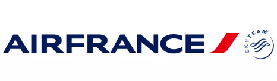

Context
Adding digital sobriety to the Service Center Test
Air France's Service Center Test validates the quality of mobile and web applications for customers and business teams.
Air France IT has strong Responsible Digital objectives. It therefore wanted to add new capabilities to validate application frugality and eco-responsibility.
The challenge was to integrate this approach into existing test and software quality practices, while enabling teams to track improvements concretely.

Results
Packaged green scans and measured gains on the Air France app
Gains observed on the Air France application
- CO₂e impact: −9%.
- Journey time: −11%.
Keys to success
What made the difference
A tool choice suited to the need
The Sogeti team in place advised Air France on choosing a green testing tool suited to its challenges and application context.
Operational deployment of Greenspector Studio
The Greenspector Studio licence was deployed by the vendor so teams could measure and track application frugality.
Team upskilling
Air France and Sogeti staff were trained to use Greenspector Studio, which they now use daily.
Concrete results to engage with business teams
Measurements show improvements achieved, identify overconsumption and guide corrections in upcoming releases.
Testimonials
What the teams say
« I can show improvements to my business stakeholders. »
« We did implement that change somewhat roughly. We'll fix it in the next release. »
« I'm really looking forward to improving or at least maintaining our ecoscore, and I appreciate your support in this! »
Your turn
Want to integrate green testing into your quality processes?
Your turn